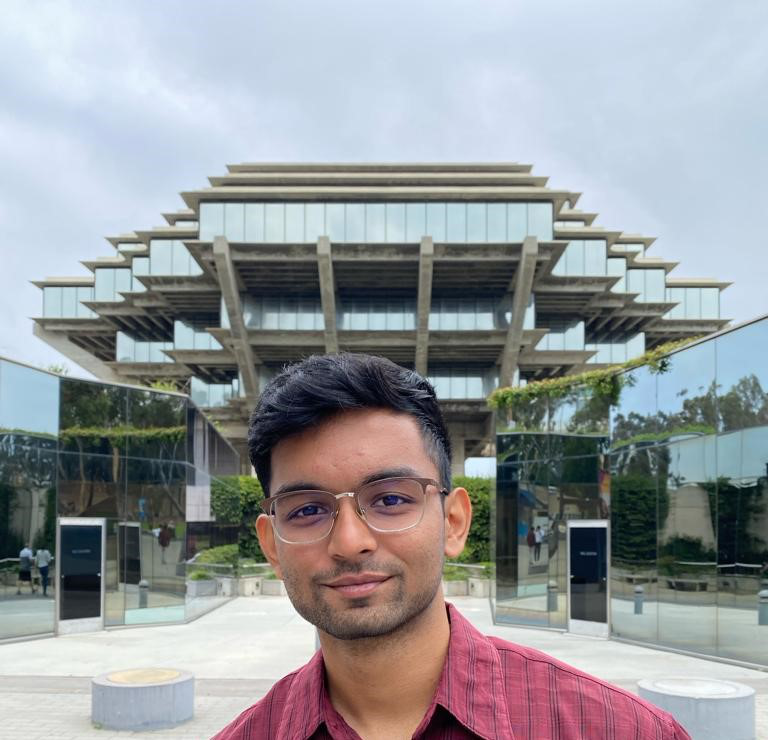
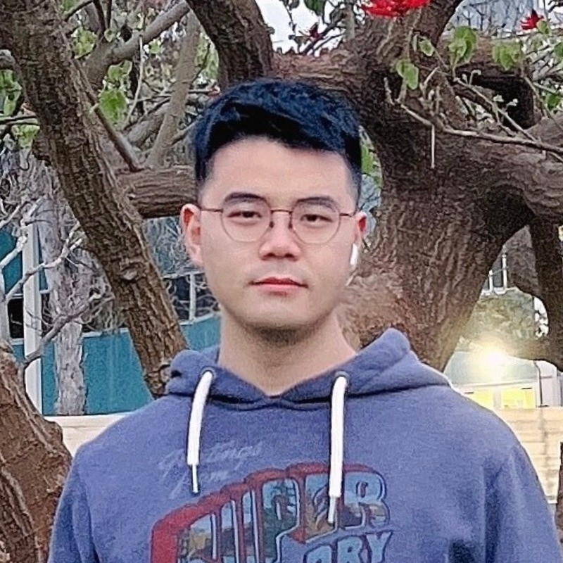
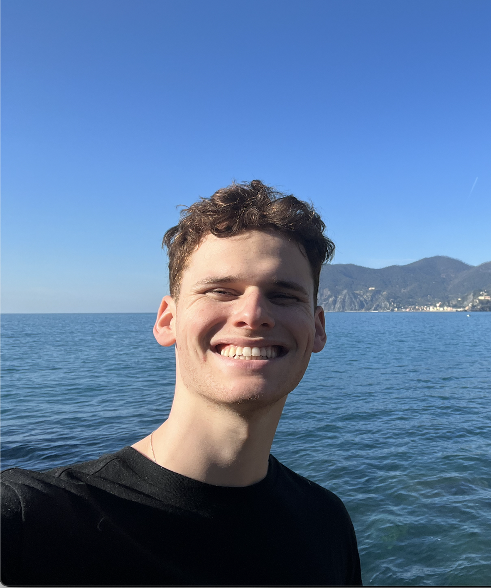
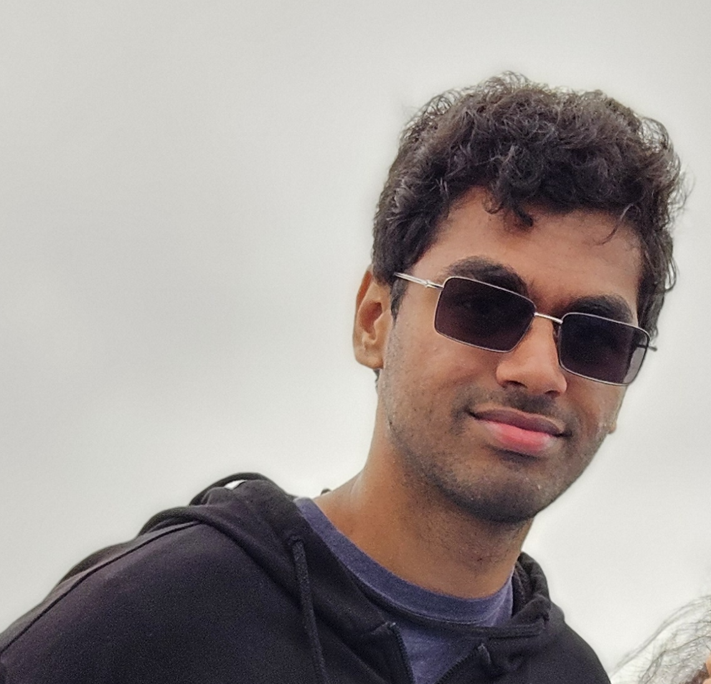
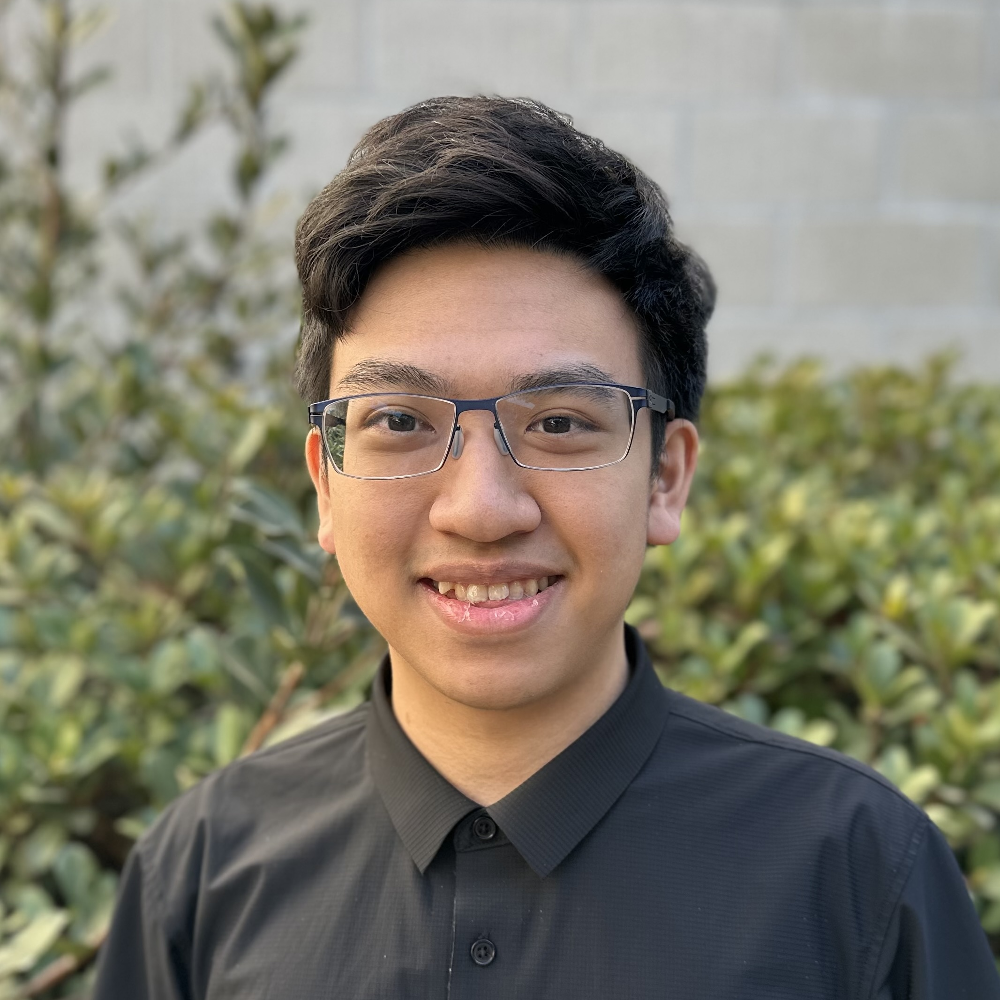
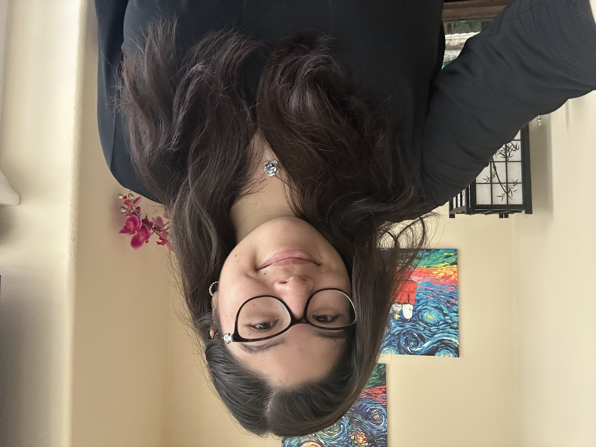
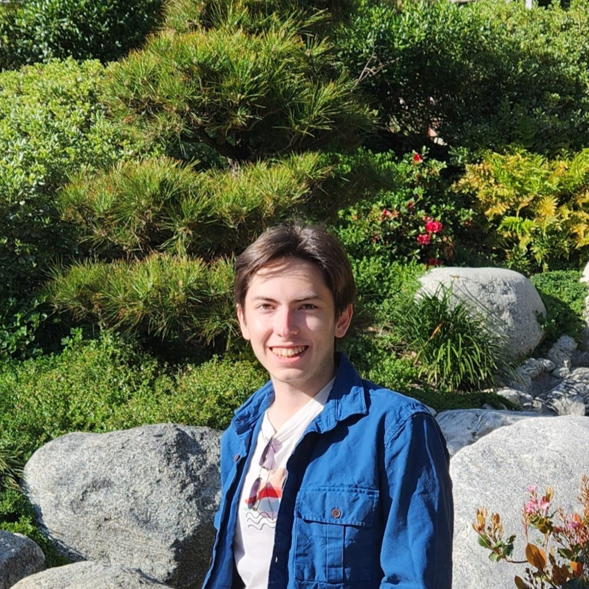
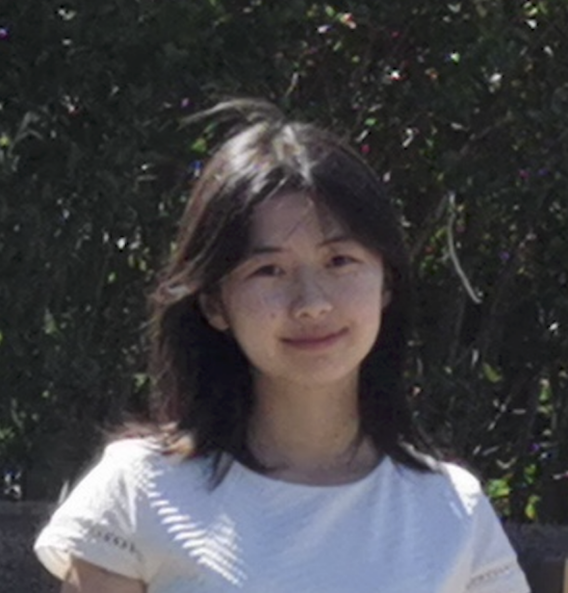
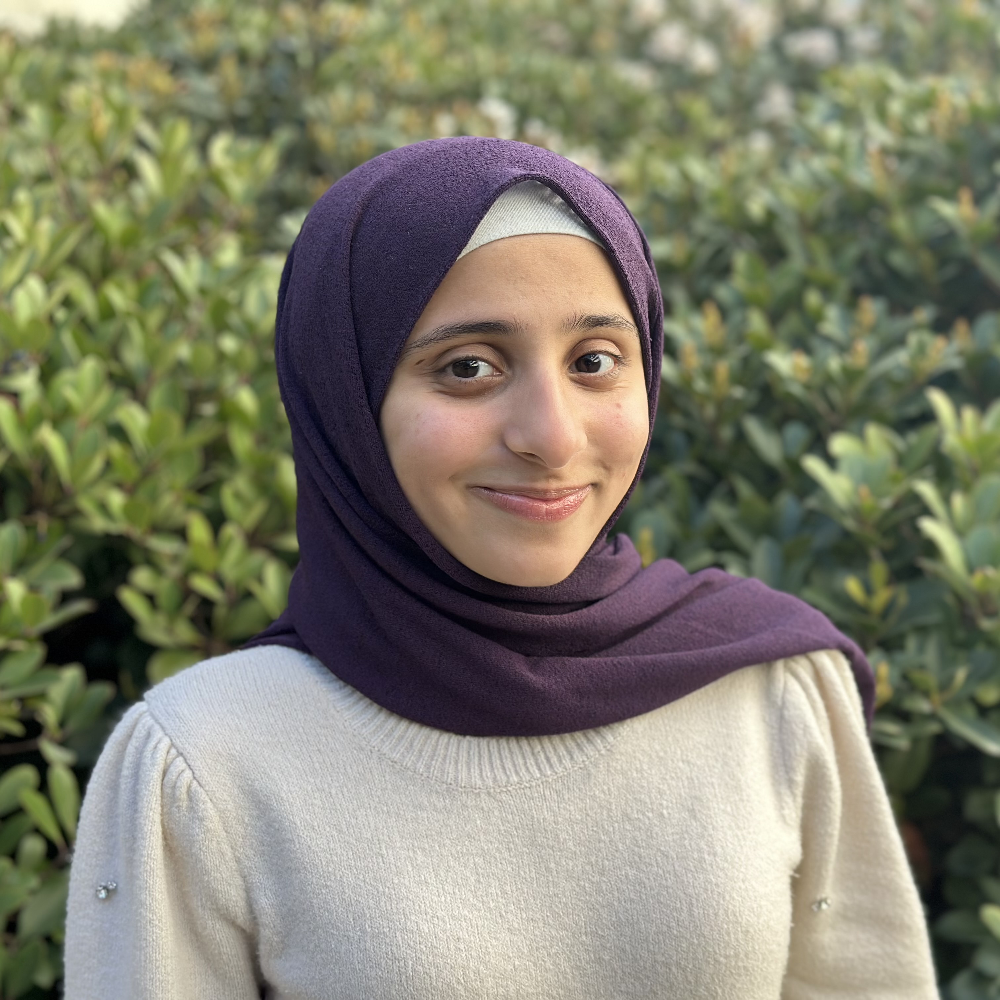

DSC 140A – Probabilistic Modeling and Machine Learning
Instructors
Justin Eldridge
I teach data science classes at UCSD.
Staff
Ruoyu (Chloe) Hou
TA
I am currently an MS student in CS, and I also studied DSC as an undergrad at UCSD. Outside of academics, I love snowboarding, PC gaming, and traveling.

Mithil Chaudhary
TA
I am a second-year MS student in CSE and this is my third time TA-ing DSC140A. In my free time, I enjoy hiking, singing and DJing!

Heng Zhu
reader
I am a PhD student at HDSI, UCSD.
Nick Swetlin
tutor
Fourth year data science major, fourth term tutoring, fourth year beatboxing.

Bradley Nathanson
tutor
I am a 4th year DSC major and in my free time I like to run and cook food.

Pranav Rebala
tutor
4th year DSC student, 4th time tutoring, and I love eating good food

Ahmed Mostafa
tutor
I am a 3rd year data science major w/ math minor. In my free time I enjoy playing soccer, tennis, and ping pong.

Gallant Tsao
tutor
Fourth year applied math & data science major. I love cooking, playing the piano, & playing videogames (just started ror2 recently).

Zoe Ludena
tutor
Fourth Year Data Science Student with Business Economics minor, an obsessive baker, tutoring for the eighth time.

Mert Ozer
tutor
Third year data science major. This will be my second quarter tutoring for DSC140A.

Jessica Song
tutor
Hi! I'm Jessica, a 4th year data science student. I'm interested in using ML/DL for real-world applications, and my other interests include calligraphy, journaling, & boxing. Feel free to talk to me about recruiting, DSC curriculum, and favorite boba places at SD. I'd love to meet you all!

Maryam Almahasnah
tutor
Hello! I'm Maryam (aka Maya) and I'm a 4th year Data Science major and an HDSI student coucil member. Outside of academics, I like reading and drawing. Feel free to talk to me about anything (:
Yosen Lin
tutor
4th year DSC major w/ math minor. Baseball fanatic. Have tutored DSC 40A 3 times, first time tutoring this class. Feel free to reach out for clarifying concepts, collaborative DS/ML projects, or yapping about life!